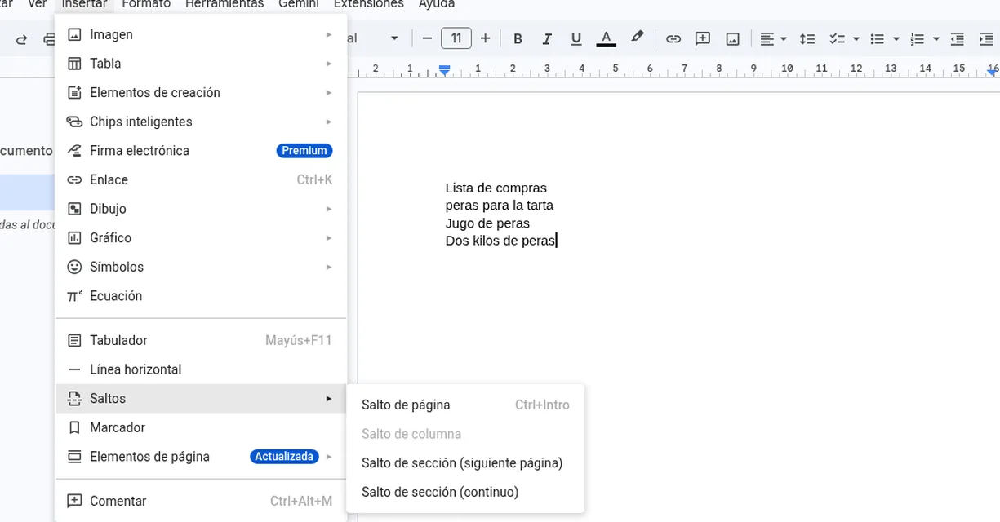
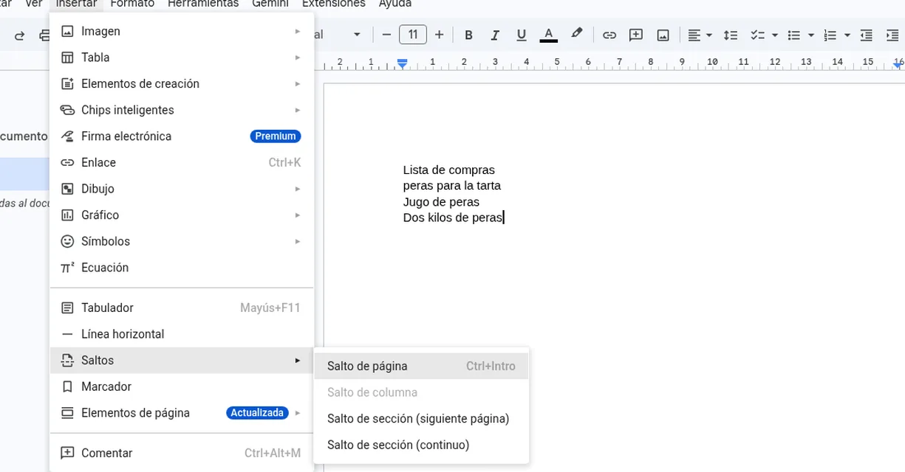
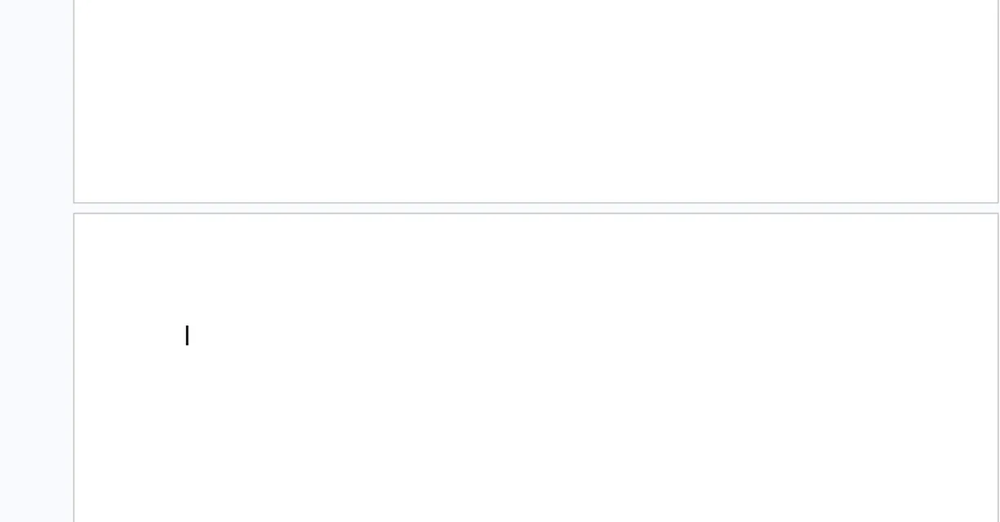
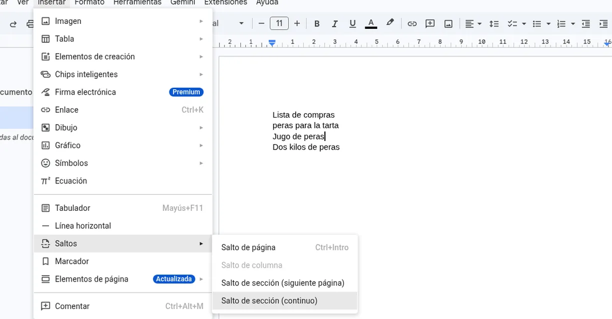
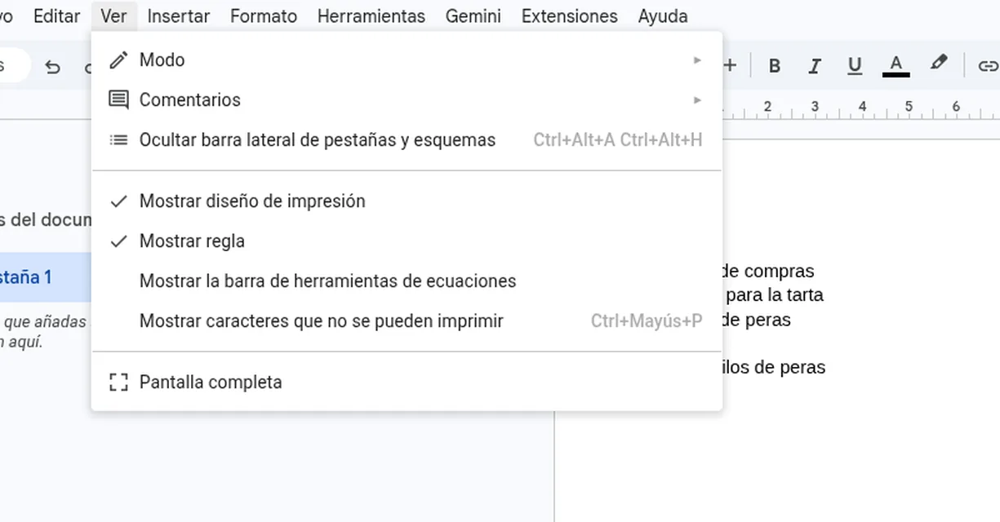
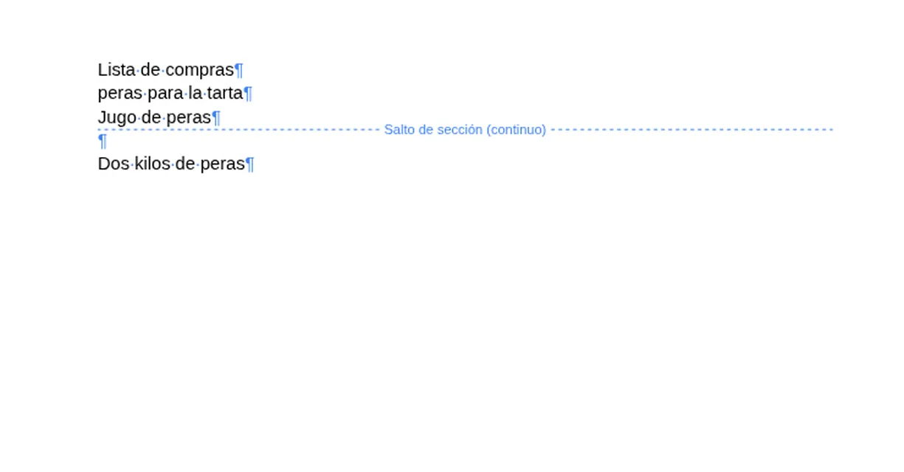
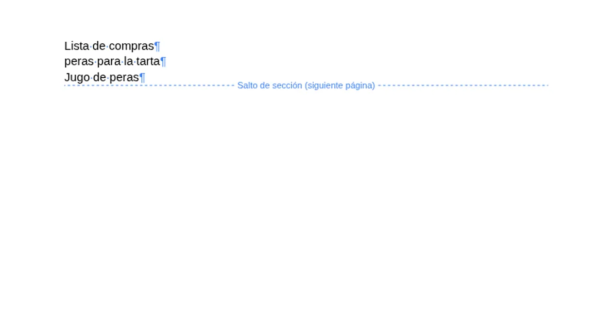
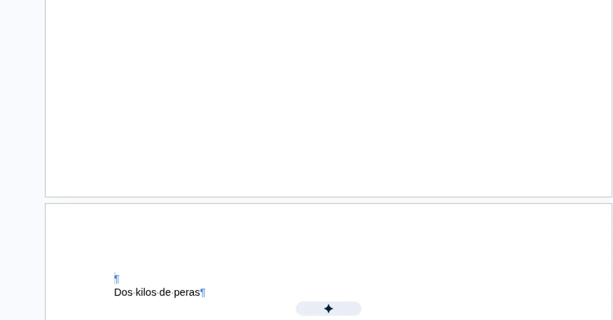
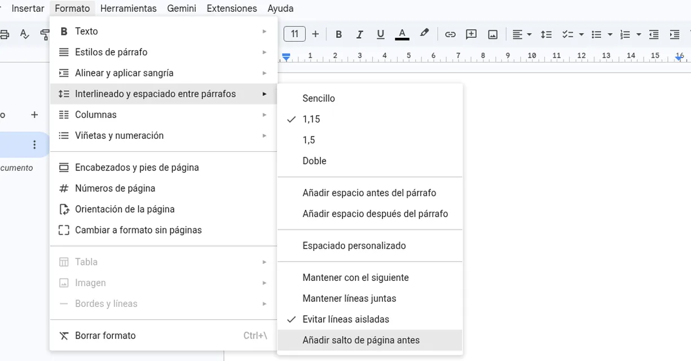

Curso de Google Documentos › Insertar › Lección 27
Lección 27 de 53 · menú Insertar
Saltos de página y de sección en Google Docs
Fecha del video: · Programado
¿Querés empezar una página nueva en Google Docs? Con Insertar → Saltos tenés el salto de página y dos tipos de salto de sección, y con Ctrl+Intro hacés el salto de página al instante. Acá lo vemos paso a paso.
En el ejemplo usamos el documento «Lista de compras»: le agregamos saltos antes del renglón «Dos kilos de peras» y al final los sacamos, así el documento quedó como estaba.
Paso 1: Insertar → Saltos
Poné el cursor donde querés cortar. Arriba, en la barra de menús, tocá Insertar y pasá por Saltos. Se abre un submenú con 4 opciones: Salto de página (Ctrl+Intro), Salto de columna (en gris en el ejemplo: se usa cuando el documento tiene columnas), Salto de sección (siguiente página) y Salto de sección (continuo).

Paso 2: salto de página
Elegí Salto de página. Lo que está después del cursor pasa a una página nueva.

El salto de página no dibuja ninguna línea: el cursor aparece directamente arriba de la página 2.

Paso 3: el atajo Ctrl+Intro
Más rápido: poné el cursor y apretá Ctrl+Intro (en Mac, ⌘+Intro). Es el mismo salto de página. Para sacarlo, hacé clic debajo del salto y apretá Retroceso (o usá Deshacer, Ctrl+Z).
Paso 4: salto de sección (continuo)
Con Insertar → Saltos → Salto de sección (continuo) empieza una sección nueva en la misma página. Sirve, por ejemplo, para que una parte del documento tenga otros márgenes o columnas sin cambiar de página.

Paso 5: ver dónde están los saltos
La ayuda de Google dice que se ven con Ver → Mostrar saltos de sección, pero en nuestra cuenta esa opción no aparece en el menú Ver. Lo que sí funciona: Ver → «Mostrar caracteres que no se pueden imprimir» (atajo Ctrl+Mayús+P).

Así aparece una línea punteada azul con el nombre del salto, «Salto de sección (continuo)», y las marcas ¶ al final de cada párrafo. Esas marcas no salen al imprimir.

Paso 6: salto de sección (siguiente página)
Con Salto de sección (siguiente página) la sección nueva empieza en la página siguiente. Con los caracteres no imprimibles a la vista, la línea punteada dice «Salto de sección (siguiente página)»…

…y el texto que seguía («Dos kilos de peras») pasa a la página 2.

Paso 7: salto de página antes de un párrafo
Si querés que un párrafo (por ejemplo, un título) empiece siempre en una página nueva, hacé clic en él y andá a Formato → Interlineado y espaciado entre párrafos → Añadir salto de página antes.

Ojo: los saltos no funcionan en los documentos con formato Sin páginas. El documento tiene que estar en formato Páginas (Archivo → Configuración de página → Páginas).
Al final borramos los saltos y el documento quedó como al principio.
Fuente oficial: Cómo agregar saltos de página y mover los márgenes. Mirá también el menú Insertar completo (video: Google Docs: menú Insertar paso a paso) y la lección anterior, Cómo escribir ecuaciones.
Mirá el Short
Estreno del Short: 05/12/2026 · 09:00 (hora Argentina)
Video relacionado: Google Docs: menú Insertar paso a paso (tutorial completo) — el video largo del menú Insertar (verlo en YouTube).
Fuente oficial: Ayuda de Editores de Documentos de Google. Capturas propias en un documento de ejemplo («Lista de compras»). El video usa voz generada con IA.